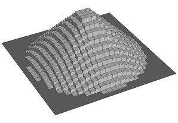
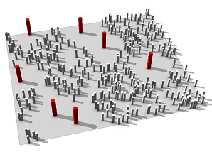

minimumDistance function
target selector
| intra | Checks against labeled shapes in the same shape tree, that is, from the same initial shape. |
| inter | Checks against labeled shapes in other shape trees, that is, generated by other initial shapes in the neighborhood. |
| all | Checks both intra and inter. |
Returns the minimum distance of the current scope to all scopes of shapes that match the given label. If no shape is found matching the specified label, infinity is returned.
A context query that returns the distance of the current scope to the scopes of other shapes.
Related
Examples
Split rule

Lot --> split(x) { ~0.1 : Lot(split.index) }*
Lot(x) --> split(z) { ~0.1 : Lot(x, split.index) }*
Lot(x, z) --> [ case (x == 12) && (z == 12) : label("label")
else : NIL ]
Extrude(minimumDistance(intra, "label"))
Extrude(dist) --> case dist < 1 : extrude(1-dist) X.
else : NIL
This example applies the Lot rule to a single shape, using intra context. The shape is split in x- and z-direction into small lots. At the center of the initial shape a shape with label "label" is created. Each lot in the grid is extruded with respect to the minimum distance to the labeled center shape.
Scatter rule

Lot --> scatter(surface, 500, uniform) { Scattered }
Scattered --> 1% : Label
else : Check
Label --> primitiveCylinder(16, 0.1, 1) color(1,0,0) label("label")
Check --> case minimumDistance(intra, "label") < 1 : NIL
else : primitiveCylinder(16, 0.05, 0.5)
This example applies the Lot rule to a single shape, using intra context. Scattered cylinders are labeled with "label" and colored red in 1% of all cases. In all other cases cylinders are placed if they are more than a distance of 1 away from a red cylinder.